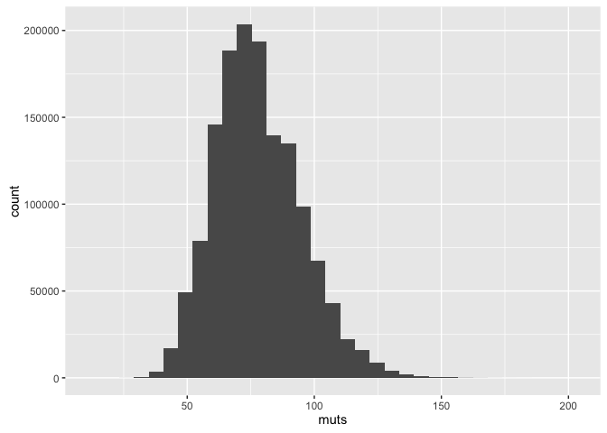
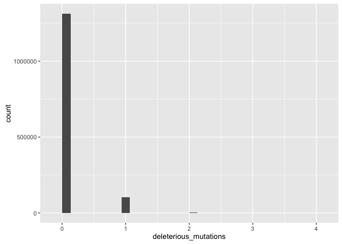
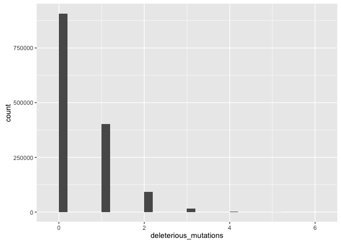
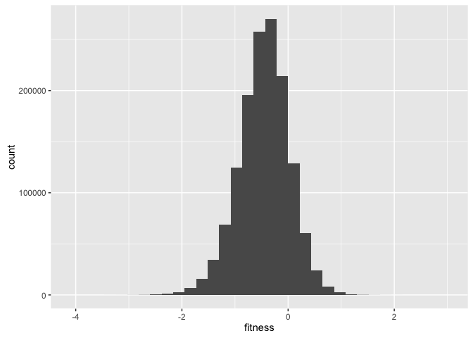
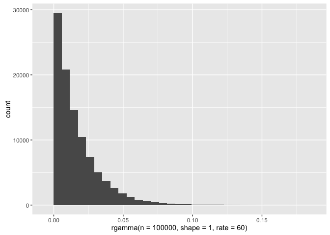
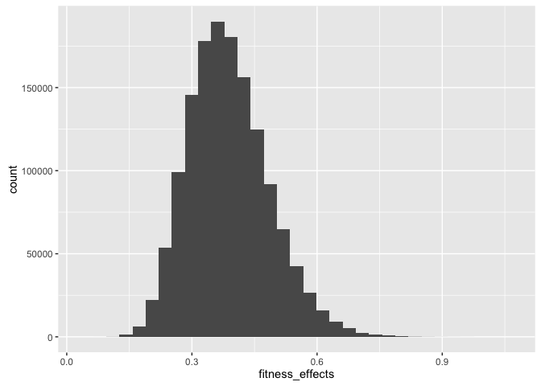
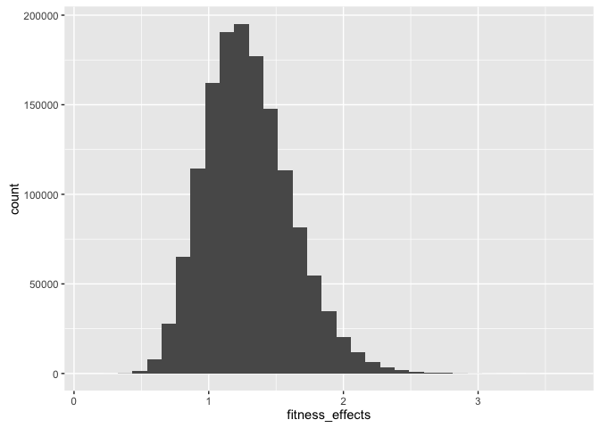
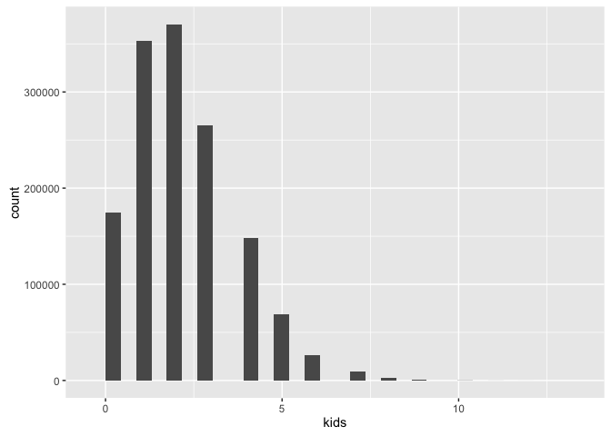

Realistic effect sizes
Loading packages
library(ggplot2)Problem statement
What are realistic effect sizes for paternal age effects that can be accounted for by mutations? The problem is that most of the variables/parameters involved are unknown:
- Selection on relative fitness differences or absolute fitness
- probably both
- some mutations are just lethal
- sexual selection can sort by cumulative load
- unclear how to model both
- probably both
- distribution of fitness effects
- presumably somewhat upward of 1/10000/60 are clearly lethal mutation, based on guesstimated aggregate incidence of lethal de novo mutation-based disease
- maybe 4/100 have intellectual disability/autism and other things that are on average a genetic death
- maybe 30% is a conservative estimate for ID/autism cases caused by de novo, so 1/100 causes a genetic death? seems high
- maybe 0.35 per genome per generation affect amino acids, which usually isn’t good (but also not nec lethal)
- ca 1 in 500 births are Down syndrome, which is almost genetically lethal. now, those usually don’t come from the father, but 1 in 500 seems to be something that can exist
- other mutations aren’t all neutral and small negative effect may add up. These differences may be selected on relatively (i.e. if everyone is slightly uglier the same selection coefficient still applies). No one has put a convincing number on this.
- de novo mutation contribution to fitness differences. This is relevant for non-lethal mutations, because if de novo mutations just contribute a little bit of the differences, h2 of fitness in humans sometimes given as 30%, but that’s of course an upper bound.
a bunch of congenital diseases from Wikipedia
congenital = read.delim(textConnection("Birth Defects Cases per Births Estimated Annual Number of Cases Estimated National Prevalence per 10,000 Live Births (Adjusted for maternal race/ethnicity)
Anencephaly 1 in 4,859 859 2.06
Spina bifida without anencephaly 1 in 2,858 1460 3.50
Encephalocele 1 in 12,235 341 0.82
Anophthalmia/ microphthalmia 1 in 5,349 780 1.87
Common truncus 1 in 13,876 301 0.72
Transposition of great arteries 1 in 3,333 1252 3.00
Tetralogy of Fallot 1 in 2,518 1657 3.97
Atrioventricular septal defect 1 in 2,122 1966 4.71
Hypoplastic left heart syndrome 1 in 4,344 960 2.30
Cleft palate without cleft lip 1 in 1,574 2651 6.35
Cleft lip with and without cleft palate 1 in 940 4437 10.63
Esophageal atresia/tracheoeophageal fistula 1 in 4,608 905 2.17
Rectal and large intestinalatresia/stenosis 1 in 2,138 1952 4.68
Reduction deformity, upper limbs 1 in 2,869 1454 3.49
Reduction deformity, lower limbs 1 in 5,949 701 1.68
Gastroschisis 1 in 2,229 1871 4.49
Omphalocele 1 in 5,386 775 1.86
Diaphragmatic hernia 1 in 3,836 1088 2.61"))
sum(congenital$Estimated.National.Prevalence.per.10.000.Live.Births..Adjusted.for.maternal.race.ethnicity.)/10000## [1] 0.006091Might be not complete unreasonable to assume that the number of mutation-caused diseases per birth is somewhere above 1 in 1000.
Relevant sections from Keightley 2012
Considering only mutations that change an amino acid of a protein-coding gene (UP = 0.35) predicted W" = 0.7. For deleterious mutations occurring anywhere in the genome (U = 2.2), W" = 0.11. This latter figure seems implausibly low. For example, if each female were capable of producing 20 offspring, 18 of these progeny, on average, would need to undergo genetic death. With the caveat that some selection may occur prior to fer- tilization (Otto and Hastings 1998) or early in development (Edmonds et al. 1982), this level of selective mortality seems too high, given that there are presumably many nongenetic causes of death." “hypothesis that a load-reducing mechanism, such as quasi-truncation selec- tion, speeds up the elimination of deleterious mutations and maintains higher mean fitness
If selection acts on relative fitness differences between extant individuals in the popu- lation, as under density- or frequency-dependent selection, the mutation load paradox can disappear entirely, and in- stead, load is manifest as genetic variance for fitness (Ewens 1979; Y. Lecesque, P. Keightley, and A. Eyre-Walker, unpub- lished data).
Relative rather than absolute fitness differences are important under a range of scenarios, including compe- tition between individuals and sexual selection. Analysis of a multiplicative model in which individuals mate with prob- ability w 1⁄4 W=W" suggests that 10s or even 100s of delete- rious mutations can be eliminated from a population each generation if there is a plausible input of new mutational variation for fitness. In reality, pure hard and soft selection is unlikely, and fitness effects of new mutations may be man- ifest via both relative and absolute fitness differences. How- ever, a high genomic deleterious mutation rate, together with the absence of evidence for widespread synergistic epistasis, suggests that much natural selection in humans occurs via relative fitness differences between individuals.
Unfortunately, parameter estimates based on the DFE inferred from polymorphism data are highly model de- pendent, making prediction of the rate of change of mean fitness under relaxed selection problematic
Boyko et al. (2008) fitted several models of the DFE to data for over 11,000 genes from indi- viduals of African and European ancestry. The best-fitting DFE was a mixture distribution containing a normally dis- tributed class of mutational effects and a point mass of strongly deleterious mutational effects.
Estimates of the mean fitness effect of an amino acid mutation drawn from the normally distributed class were 1024 and 1023 for Afri- cans and Europeans, respectively. Assuming that UP = 0.35 (see above), maximum rates of fitness loss per generation if selection were completely relaxed on these mutations are only 0.0015% and 0.02% for Africans and Europeans, re- spectively. The class of strongly deleterious mutations repre- sents mutations (including some lethals) with effects Nehs . $10 that are kept so rare by purifying selection as to be essentially absent from polymorphism data.
At an arbitrary time point 200 years in the future (about eight human generations), the nematode and Drosophila parameters predict maximum fitness losses of 1 and 14%, respectively. However, several factors suggest that the reduc- tion in fitness could be considerably smaller. First, calcula- tions have assumed additive gene action, but theory suggests that large-effect mutations tend to be partially recessive (Wright 1934; Kacser and Burns 1981). Fitness reduction caused by an accumulation of recessive deleterious mutations is delayed, and predicted DR values could be 50% or more lower (García-Dorado and Caballero 2000; Vassilieva et al. 2000).
Second, doubts have been raised about D. melanogaster MA experiments, particularly the validity of controls, and the possibility of nonmutational changes in fitness or un- usual transposable element activity, and these doubts have been debated (Keightley 1996; García-Dorado 1997; Crow 1997; Keightley and Eyre-Walker 1999; Lynch et al. 1999; Fry 2004; Halligan and Keightley 2009). Third, although modern medicine and lifestyle changes have undoubtedly reduced natural selection in some human populations, nat- ural selection still occurs in all human populations. There is scope for selection in the germline cell lineages (Reed and Aquadro 2006), and many pregnancies spontaneously abort (Edmonds et al. 1982). Sexual selection still operates in human societies (Perrett et al. 1999), and this and other factors generate family size variation, allowing opportunities for natural selection. For example, selection associated with variation in male wealth in contemporary populations is at least as strong as selection measured in field studies of nat- ural populations of other species (Nettle and Pollet 2008). Finally, a change in mean fitness could be inconsequential if selection is soft (for example, it might not matter if everyone becomes 5% less sexually attractive). The above considera- tions lead to doubts about whether deleterious mutation accumulation will produce a detectable fitness loss in humans in the foreseeable future. Less speculative, perhaps, is the existence of finite global energy, food, and water resources. Coupled with expanding human populations, these factors may intensify competition and lead to stronger natural selection in years to come.
Relevant sections from Lesecque et al. 2012
Parameters
Assume 14+60 de novo mutations per genome per generation. Paternal age effect of 20 per decade.
denovos = 60
inc_patage = 20
load("swed1.rdata")
paternalage = swed.1$paternalage
rm(swed.1)
muts = rpois(n = length(paternalage), lambda = 14 + paternalage * inc_patage + rnorm(length(paternalage), sd = 3.5))
explain = glm(muts ~ paternalage, family = poisson())
no_explain = glm(muts ~ 1, family = poisson())
sjmisc::pseudo_r2(explain)## $CoxSnell
## [1] 0.9146
##
## $Nagelkerke
## [1] 0.9387(logLik(explain)/logLik(no_explain)) / (1 - mean(muts)/var(muts))## 'log Lik.' 1.026 (df=2)lm_r2 = summary(lm(muts ~ paternalage))$adj.r.squared
lm_r2 / (1 - mean(muts)/var(muts)) # as in kong et al. 2012 supplement, achieve .94 var explained## [1] 0.9413cor.test(muts, paternalage) # natural poisson var means correlation not perfect##
## Pearson's product-moment correlation
##
## data: muts and paternalage
## t = 1800, df = 1400000, p-value <2e-16
## alternative hypothesis: true correlation is not equal to 0
## 95 percent confidence interval:
## 0.8289 0.8299
## sample estimates:
## cor
## 0.8294qplot(muts)## `stat_bin()` using `bins = 30`. Pick better value with `binwidth`.
mean(muts)## [1] 77.71var(muts)## [1] 288.7assume 1/1000 is lethal
(seems ok, just downs is that many, presumably other syndromes add up)
deleterious_mutations = rpois(length(muts), lambda = 1 / 1000 * muts)
qplot(deleterious_mutations)## `stat_bin()` using `bins = 30`. Pick better value with `binwidth`.
mean(deleterious_mutations > 0)## [1] 0.07472lethal = glm(deleterious_mutations > 0 ~ paternalage, family = binomial())
pred = predict(lethal, newdata = data.frame(paternalage = c(0,1)), type = "response")
pred[2] - pred[1]## 2
## 0.009467sjmisc::pseudo_r2(lethal)## $CoxSnell
## [1] 0.002349
##
## $Nagelkerke
## [1] 0.005699assume 2/1000 are lethal
(still seems ok, just downs is that many, presumably other syndromes add up)
deleterious_mutations = rpois(length(muts), lambda = 2 / 1000 * muts)
mean(deleterious_mutations > 0)## [1] 0.1432lethal = glm(deleterious_mutations > 0 ~ paternalage, family = binomial())
pred = predict(lethal, newdata = data.frame(paternalage = c(0,1)), type = "response")
pred[2] - pred[1]## 2
## 0.01834sjmisc::pseudo_r2(lethal)## $CoxSnell
## [1] 0.004405
##
## $Nagelkerke
## [1] 0.007863assume 5/1000 are lethal
(can’t be true, because we don’t observe that many deaths, this is based on 0.35 mutations that may change an amino-acid according to keightley 2012)
0.35/60## [1] 0.005833deleterious_mutations = rpois(length(muts), lambda = 0.35 / 60 * muts)
qplot(deleterious_mutations)## `stat_bin()` using `bins = 30`. Pick better value with `binwidth`.
mean(deleterious_mutations > 0)## [1] 0.3611lethal = glm(deleterious_mutations > 0 ~ paternalage, family = binomial())
pred = predict(lethal, newdata = data.frame(paternalage = c(0,1)), type = "response")
pred[2] - pred[1]## 2
## 0.04842sjmisc::pseudo_r2(lethal)## $CoxSnell
## [1] 0.01058
##
## $Nagelkerke
## [1] 0.0145relative fitness differences, mutations of small effect allowed
fitness = -1 * rnorm(length(muts), mean = 0.35 / 60 * muts, sd = 0.35 / 60 * muts)
qplot(fitness)## `stat_bin()` using `bins = 30`. Pick better value with `binwidth`.
fitness_m = lm(fitness ~ paternalage)
summary(fitness_m)##
## Call:
## lm(formula = fitness ~ paternalage)
##
## Residuals:
## Min 1Q Median 3Q Max
## -3.358 -0.294 0.007 0.301 3.198
##
## Coefficients:
## Estimate Std. Error t value Pr(>|t|)
## (Intercept) -0.081958 0.001814 -45.2 <2e-16 ***
## paternalage -0.116555 0.000556 -209.6 <2e-16 ***
## ---
## Signif. codes: 0 '***' 0.001 '**' 0.01 '*' 0.05 '.' 0.1 ' ' 1
##
## Residual standard error: 0.467 on 1419280 degrees of freedom
## Multiple R-squared: 0.03, Adjusted R-squared: 0.03
## F-statistic: 4.39e+04 on 1 and 1419280 DF, p-value: <2e-16not making it simple on myself
# for each person draw from a gamma of this shape
qplot(rgamma(n = 1e5, shape = 1, rate = 60))## `stat_bin()` using `bins = 30`. Pick better value with `binwidth`.
qplot(rgamma(n = 1e5, shape = 1, rate = 0.45))## `stat_bin()` using `bins = 30`. Pick better value with `binwidth`.
fitness_effects = sapply(muts, function(muts) { sum(rgamma(n = muts, shape = 1, rate = 60)) })
qplot(fitness_effects)## `stat_bin()` using `bins = 30`. Pick better value with `binwidth`.
fitness = 0.8 * rnorm(length(muts)) - 0.2 * scale(fitness_effects)
kids = rpois(n = length(muts), scales::rescale(fitness, to = c(0, 4)))
qplot(fitness)## `stat_bin()` using `bins = 30`. Pick better value with `binwidth`.
qplot(kids)## `stat_bin()` using `bins = 30`. Pick better value with `binwidth`.
mean(kids)## [1] 2.171df = data.frame(fitness, kids, paternalage = paternalage)
fitness_m = glm(kids ~ paternalage, data = df, family = poisson)
pred = predict(fitness_m, newdata = data.frame(paternalage = c(0,1)), type = "response")
pred[2]/pred[1] - 1## 2
## -0.04433pred[2] - pred[1]## 2
## -0.1111Wrap up
Session Info
sessionInfo()## R version 3.2.3 (2015-12-10)
## Platform: x86_64-apple-darwin13.4.0 (64-bit)
## Running under: OS X 10.10.5 (Yosemite)
##
## locale:
## [1] en_US.UTF-8/en_US.UTF-8/en_US.UTF-8/C/en_US.UTF-8/en_US.UTF-8
##
## attached base packages:
## [1] grDevices datasets utils graphics stats methods base
##
## other attached packages:
## [1] stringi_1.0-1 pander_0.6.0 knitr_1.12.3 rmarkdown_0.9.5
## [5] dplyr_0.4.3 ggplot2_2.0.0 formr_0.3.1 data.table_1.9.6
## [9] stringr_1.0.0 devtools_1.9.1
##
## loaded via a namespace (and not attached):
## [1] Rcpp_0.12.3 magrittr_1.5 MASS_7.3-45
## [4] mnormt_1.5-3 munsell_0.4.3 colorspace_1.2-6
## [7] R6_2.1.2 plyr_1.8.3 tools_3.2.3
## [10] parallel_3.2.3 grid_3.2.3 gtable_0.2.0
## [13] psych_1.5.8 DBI_0.3.1 htmltools_0.3
## [16] sjmisc_1.4 digest_0.6.9 assertthat_0.1
## [19] formatR_1.2.1 rsconnect_0.4.1.4 evaluate_0.8
## [22] memoise_1.0.0 labeling_0.3 scales_0.4.0
## [25] chron_2.3-47date()## [1] "Thu Mar 17 20:30:27 2016"